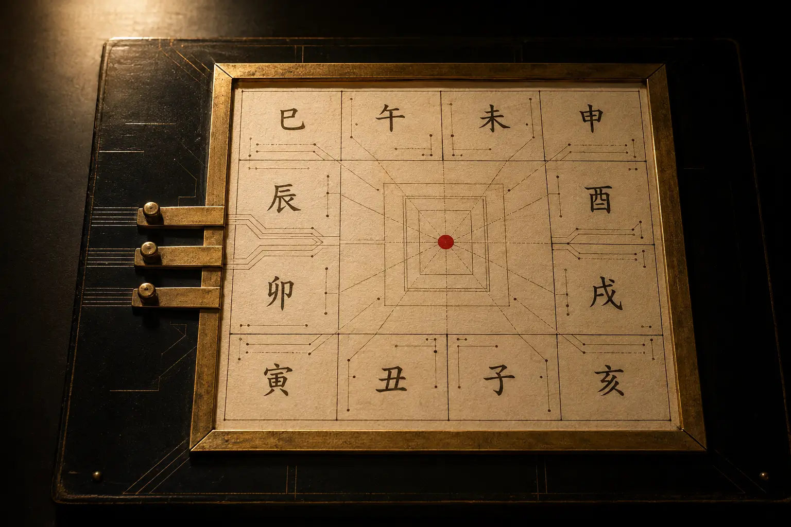
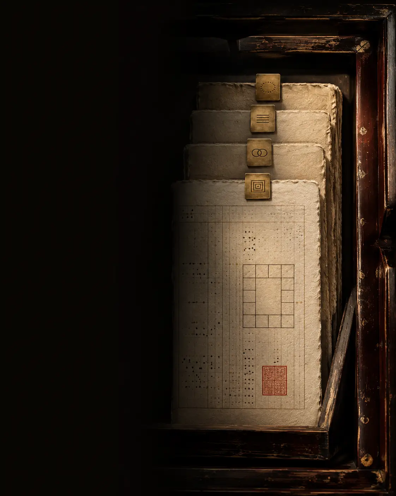
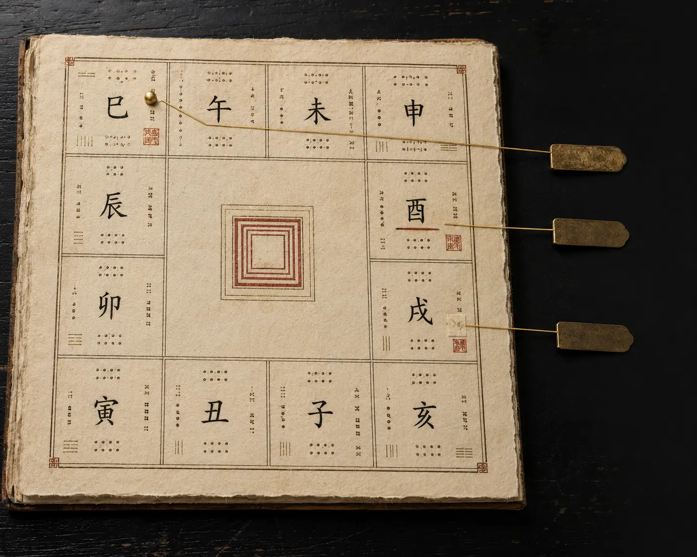
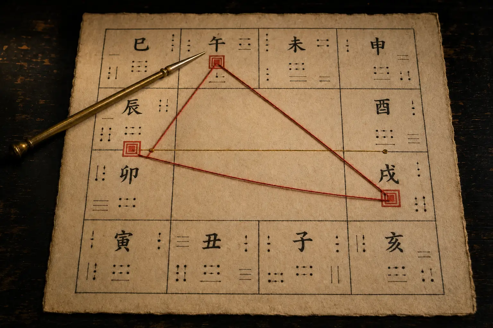

Nhập thời khắc sinh một lần — soi tỏ căn tính và đường đời qua Tử Vi, Bát Tự, Bản đồ sao và Thần Số Học.
Không thần bí hóa, không phán xét tương lai. Lá Số Việt chuyển hóa đồ hình cổ xưa thành lời giải thích tiếng Việt sáng rõ, minh bạch từng căn cứ — để bạn thấu hiểu chính mình và vững vàng trong mọi lựa chọn.
Tra Tử Vi một nơi, xem Thần Số Học một chỗ, đọc thêm Bản đồ sao ở nơi khác. Mỗi nơi phán một mảnh ghép rời rạc, mâu thuẫn:
Quá nhiều từ Hán–Việt cổ, đọc xong càng thêm mơ hồ.
Khen chê chung chung kiểu áp cho ai cũng đúng.
Phóng đại vận hạn cốt để ép mua đồ giải hạn.
Lá Số Việt hợp nhất các hệ tri thức tinh hoa trên cùng tọa độ sinh của riêng bạn — giải nghĩa mạch lạc, tường minh căn cứ, để bạn tự đối chiếu và quyết định.
Nhập ngày giờ sinh một lần — hồ sơ của bạn được kích hoạt đồng thời qua 4 bộ môn nguyên bản. Kinh Dịch dùng câu hỏi riêng, không cần hồ sơ sinh.
Đồ hình 12 cung và đại vận 10 năm. Thấu suốt gốc rễ bản mệnh, các nút thắt then chốt và thời điểm chuyển mình.
Xem lá số Tử ViPhân tích Kim – Mộc – Thủy – Hỏa – Thổ qua 4 trụ. Nhận diện điểm vượng – khuyết để thuận dòng tự nhiên, chọn thời lập nghiệp.
Khám phá Bát TựTâm lý học chiều sâu qua vị trí các thiên thể. Giải mã cấu trúc tính cách, xung đột nội tâm và động lực vô thức.
Khám phá Bản đồ saoTần số từ ngày sinh và tên gọi. Nhận diện bài học cần hoàn thiện và xu hướng biến chuyển từng năm.
Khám phá Thần Số HọcĐặt một câu hỏi thật, gieo một quẻ. Không cần hồ sơ sinh — chỉ cần câu hỏi và thời điểm gieo quẻ.
Khám phá Kinh DịchChatbot chỉ là mô hình ngôn ngữ, không phải cỗ máy tính toán. Chúng rất hay đổi sai ngày âm dương, nhầm múi giờ lịch sử Việt Nam và an nhầm vị trí sao. Dữ liệu gốc sai thì lời giải vô nghĩa.
Lá Số Việt sở hữu engine tính toán thiên văn riêng — mô phỏng tọa độ thiên thể, tiết khí và can chi trước khi đưa vào luận giải.
Chatbot gom nhặt thông tin trôi nổi, lẫn lộn dị bản. Lá Số Việt chuẩn hóa dữ liệu theo kinh điển mệnh lý chính thống, loại bỏ mê tín.
Tương tác trực tiếp trên thiên bàn 12 cung, tra cứu từng cung vị và lưu trữ hồ sơ an toàn — thay vì đọc một đoạn chat dài rối rắm.
Không phải để chê cách cũ. Chỉ là để bạn biết rõ mình đang đổi lấy gì trước khi tin.
| Tiêu chí | Website tra cứu hiện nay | Bói toán truyền thống | Chuẩn mực tại Lá Số Việt |
|---|---|---|---|
| Nguồn tri thức | Sao chép trôi nổi từ diễn đàn, lẫn lộn dị bản. | Truyền khẩu một chiều, khó kiểm chứng. | Kế thừa và chuẩn hóa từ 100+ tàng thư cổ Đông – Tây. |
| Ngôn ngữ | Lạm dụng từ Hán – Việt đánh đố, dịch máy móc. | Phán xét áp đặt, dùng từ huyền bí tạo uy quyền. | Tiếng Việt sáng rõ, hiện đại, gắn liền thực tế đời sống. |
| Tính căn cứ | Nhận định chung chung, buông lời phán không lý do. | "Thầy nói sao nghe vậy", không giải thích nguyên do. | Mở xem căn cứ tại chỗ: rõ từng sao, cung vị và quy tắc. |
| Phạm vi | Đơn lẻ từng bộ môn — chỉ xem riêng Tử Vi hoặc Thần số. | Phân mảnh; đổi bộ môn phải tìm thầy mới từ đầu. | Một hồ sơ sinh duy nhất — đối chiếu đồng thời 4 bộ môn. |
| Tâm lý tiếp nhận | Chèn ép quảng cáo, giật tít câu view. | Dọa dẫm hạn xấu để gợi ý cúng bái, mua đồ giải hạn. | Điềm tĩnh, tôn trọng — giúp bạn thấu hiểu quy luật để tự chủ. |
| Bảo mật & phí | Rủi ro rò rỉ dữ liệu; phí phát sinh mập mờ. | Chi phí không rõ ràng, dễ đội giá tiền lễ. | Riêng tư mặc định (toàn quyền xóa); bảng giá minh bạch. |
Cơ quan chức năng đã nhiều lần cảnh báo về tình trạng lừa đảo dưới danh nghĩa xem bói online. Đây là lý do phương pháp và danh tính của Lá Số Việt luôn công khai, không giấu sau một "thầy" ẩn danh.
Lá Số Việt là công trình số hóa và chuẩn hóa tri thức mệnh lý Á Đông và chiêm tinh phương Tây thành một nền tảng sáng rõ, an toàn cho người Việt hiện đại.
Kế thừa các trước tác cổ điển — Tử Vi Đẩu Số Toàn Thư, Tử Vi Đại Toàn, Uyên Hải Tử Bình, Tam Mệnh Thông Hội, Ptolemy Tetrabiblos, Pytago... Mọi luận điểm đều truy nguyên về cội nguồn học thuật.
Hệ thống bóc tách các tầng ẩn dụ cổ ngữ, logic hóa thành các quy tắc kiểm chứng được, loại bỏ suy diễn cảm tính và mê tín dị đoan.
Thuật toán an sao độc lập với lớp ngôn ngữ, đảm bảo dữ liệu tính toán chuẩn xác trước khi chuyển dịch thành lời văn ấm áp.
Cung cấp ngày, tháng, năm và giờ sinh. Chưa rõ giờ sinh? Vẫn có các tầng phân tích chuẩn xác theo ngày.
Khám phá đồ hình trực quan và 3 nhận định cốt lõi kèm toàn bộ căn cứ giải thích.

Khi cần lời giải cho một ngã rẽ cụ thể, chọn bản luận giải sâu. Luôn xem trước mục lục và bản mẫu trước khi quyết định.

Toàn bộ sơ đồ lá số, ba điểm nổi bật và một căn cứ mở được — trước khi bạn nghĩ đến việc trả phí.

{{ ins.title }}
{{ ins.sub }}
Tại Lá Số Việt, mọi phân tích đều có xuất xứ. Bên cạnh mỗi nhận định luôn có nút "Vì sao có nhận định này?" để bạn mở xem vị trí sao, quy tắc cổ thư và tương tác ngũ hành tương ứng.
Bạn có tư duy độc lập và khả năng tự gượng dậy rất mạnh mẽ sau mỗi biến cố sự nghiệp.
Đào sâu đúng một chủ đề bạn đang băn khoăn: bản mệnh, tình duyên, sự nghiệp, hay vận trình năm nay. Súc tích, trúng đích, gợi mở hành động.
Kết nối trọn vẹn 4 trụ cột: căn tính, sự nghiệp, gia đạo và dòng chảy đại vận — cùng bản đồ nhịp vận 12 tháng giúp bạn chủ động đón thời cơ.
Ấn bản sâu sắc nhất. Tích hợp đa hệ quy chiếu Đông – Tây trên cùng hồ sơ sinh, phân tích nhịp vận qua từng thập kỷ, gợi mở phản tư để an nhiên làm chủ cuộc đời.
Thuật toán tính toán với sai số tiệm cận 0 giây theo chuẩn thiên văn quốc tế.
Tự động hiệu chỉnh biến động GMT+7, GMT+8 và quy ước giờ mùa hè qua từng giai đoạn.
Kiểm chứng đa tầng giữa 12 cung, 114 vì sao, can chi và ngũ hành nạp âm.
AI chuyển dịch đồ hình thành văn phong ấm áp — không tự bịa đặt căn cứ.
Dữ liệu thời khắc sinh được mã hóa an toàn; không bán dữ liệu, xóa sạch với một cú nhấp.
Bảo chứng không thay thế minh bạch — mọi nhận định vẫn mở được căn cứ tại chỗ.
Hướng dẫn trực quan cho người mới bắt đầu.

Giải mã năng lượng các vì sao dưới góc nhìn hành vi.
Chuyển hóa nỗi sợ thành sự chuẩn bị chủ động.
{{ f.a }}
Không phán xét tương lai. Không dùng nỗi sợ để bán hàng.
Chỉ có sự tĩnh tại, những góc nhìn sáng rõ và căn cứ chân thực đang chờ bạn.
Hiểu mình để vạn sự thong dong.